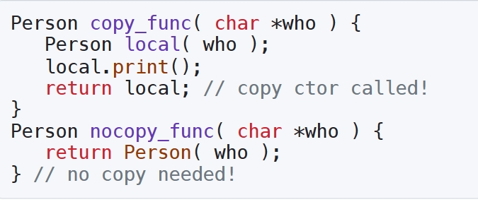
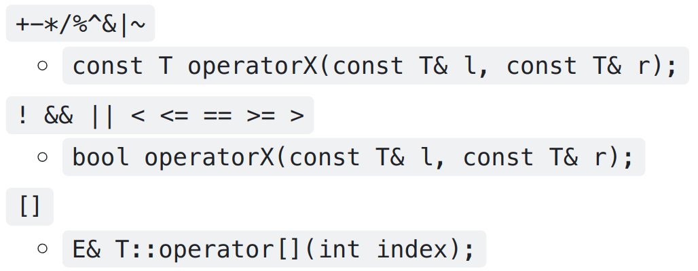
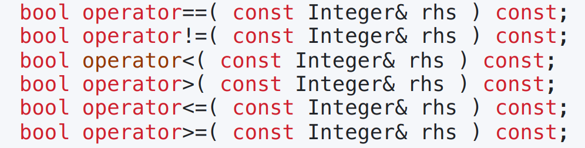
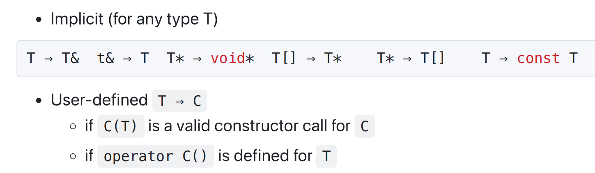
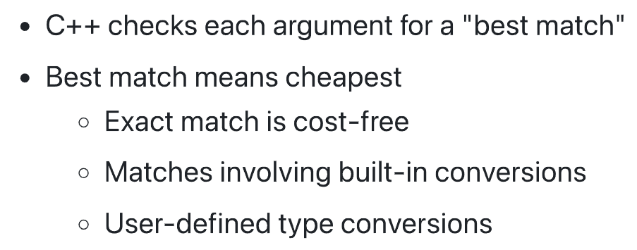
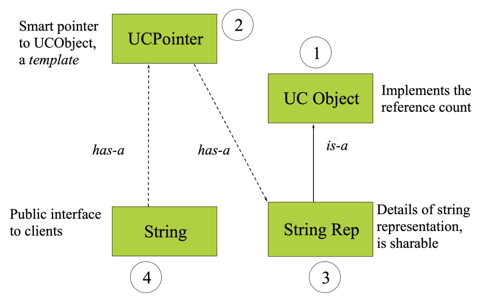
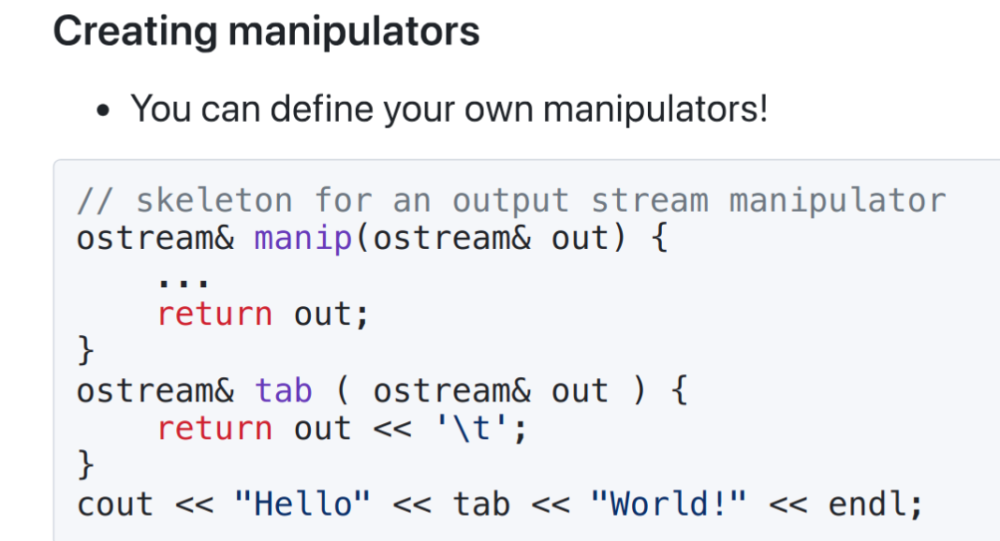
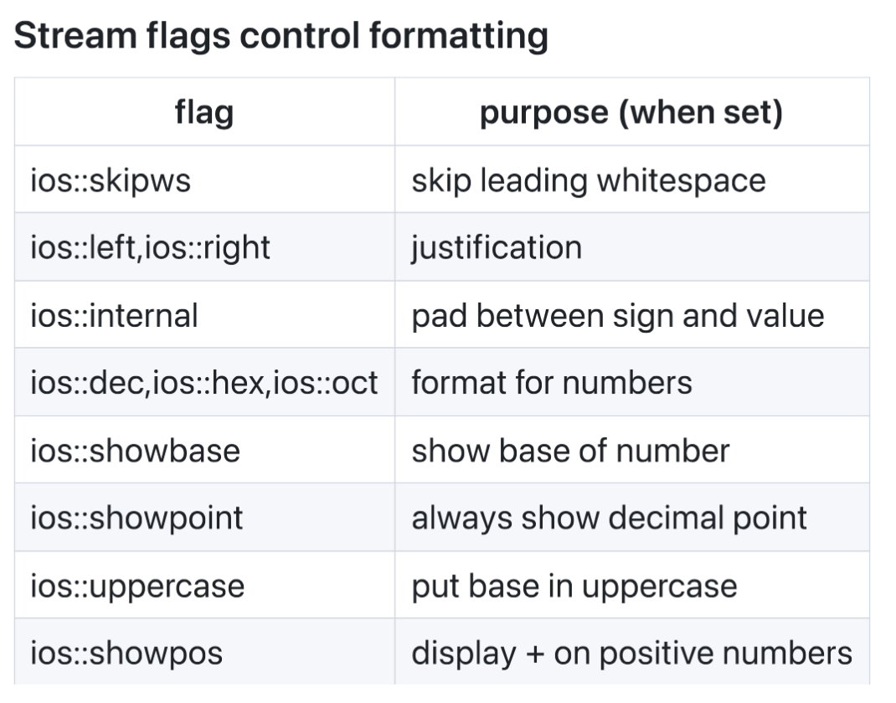
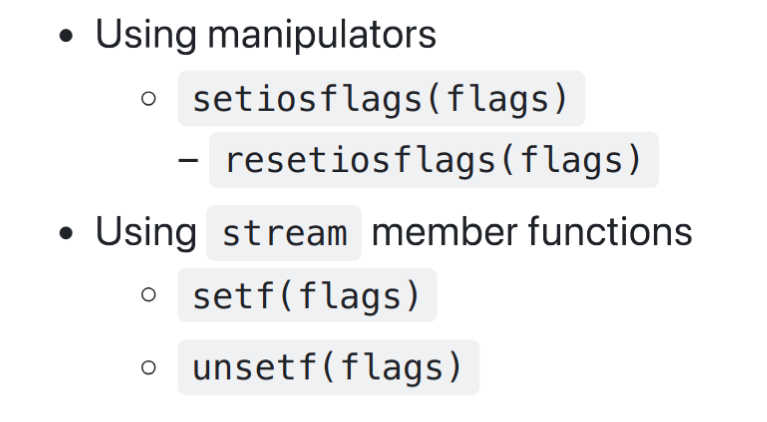
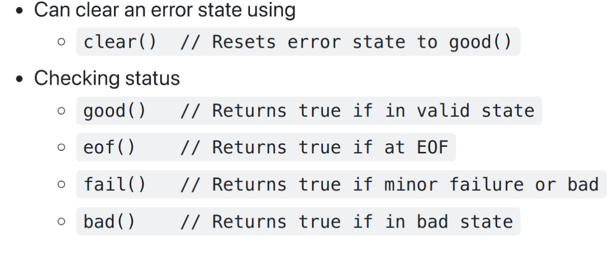

OOP
整理
声明 & 定义
声明不分配内存，定义分配内存
如 extern（除了 extern const 这个比较特殊）, struct, class 内都是声明
Varibles Scope & Lifetime
| scope | lifetime | storage | |
|---|---|---|---|
| local | {} | {} | stack |
| global | global | program | global |
| static local | {} | program (init when called) | global |
| member(private) | class | object | object |
| static member | class | program | global |
| malloc(new) | passed in-out | malloc-free(delete) | heap |
Tricks
-
编程复杂度 与 现实要求 冲突时，一般选择服从现实要求比较“顺”
-
assert用于调试，不会在release版本中执行，其本质是一个宏，如果条件为假，则输出错误信息并终止程序（#define NDEBUG可以关闭） -
没有成员变量的类 的 size 为1，用来区分，但是在其子类中不会有这个区分，即为0
-
计算类的大小时要求 各成员变量对齐，即每个变量的地址都是其大小的整数倍，并且按照声明的顺序排列。
如果有虚函数，会多一个指针，指向虚函数表，大小为8（64位系统）
此外，还要求类的大小是最大成员变量的整数倍，因此最后可能还会有一些填充字节。
class A { char a; // 1 byte, assume start at 0 int b; // 4 bytes, but need to start at 4, so 3 bytes padding char c; // 1 byte, start at 8, but 3 bytes padding }; // sizeof(A) = 12Info
注意这里的各成员变量指的都是基本数据类型，如果类内有其他对象，也是将其拆开计算
比如经过实验可以得到
sizeof(string) = 32，并且其内部有一个指针，导致对齐大小为8 -
函数传入 & 传出
Buzzwords
-
Encapsulation: 封装
-
Inheritance: 继承
-
Polymorphism: 多态，一个函数可以有多种形态，一个基类指针可以呈现不同的派生类对象
多态
-
静态多态：函数（运算法）重载
-
动态多态：虚函数，覆写
-
-
Overriding: 覆盖，即子类完全覆盖父类的方法，包括函数名、参数、返回值
-
Overloading: 重载，即函数名相同，参数不同
-
Interface: 接口
-
Cohesion: 內聚, 一个类内的功能高度相关
-
Coupling: 耦合， 不同类之间的关联程度
-
Collection classes: 容器
-
Template: 模板
-
Responsibility-driven design: 责任驱动设计
-
Generic: 泛型
-
Field: 字段
-
Parameter: 函数参数
STL
Standard Template Library
-
工程中慎用
<bits/stdc++.h>头文件，降低编译压力 -
Containers
-
vector
-
内部实现：
-
动态内存分配，当容量不足时，会将容量扩大为原来的两倍，然后将原来的元素复制到新的内存空间中，释放原来的内存空间。
-
插入均摊时间复杂度为 O(1)
-
删除元素时，会将后面的元素向前移动，时间复杂度为 O(n)
-
-
初始化构造
-
vector<int>p(capacity (,k) )(capacity 个 k，默认为0) -
vector<int>p{1,2,3}(初始化列表，capacity 为 3)
-
-
vector [] “可以”越界访问，（因为实际上的容量可能大于它显示的capacity），.at() 会抛出异常
（乱穿马路违法，但是一般没人会来管你。没撞死算幸运，撞死活该。）
-
-
deque (double ended queue)
-
内部实现：
-
使用缓存区块存取元素，使用 map 建立缓存区块的索引，当缓存区块不足时，会重新分配内存空间。
-
两端插入和删除均摊时间复杂度为 O(1)，但实现上比 vector 复杂
-
缓存区内部实现与 vector 类似
-
-
-
list (doubly linked list)
-
list.begin() != list.end()(不推荐使用 < ，可能会出错) -
copy(L, R, vector<>it)链表展平为 vector
-
-
forward_list
-
*string
-
set
-
map
-
-
Algorithms
-
Iterators
Container
容器，collection of objects that can store an arbitrary number of other objects.
-
通常用 size 来表示其中 object 的数量
-
通常用 capacity 来表示目前内存分配的容量
Class
类，一种用户自定义的数据类型，用于封装数据和方法
关于内部数据存储，具有地址对齐性，即一个短变量只会在一行内读出，不会跨行读取
构造
-
全局变量构造在main函数之外，main函数之前构造，main函数之后析构，按书写顺序构造，反序析构
-
类内构造（事实上可以将基类认为是一个声明在最前面的隐式成员变量）
-
调用父类构造函数（检查调用的构造函数的初始化列表内是否有相应代理构造，若没有则调用默认构造）
-
按顺序调用成员构造函数（检查调用的构造函数的初始化列表内是否有相应代理构造，若没有则调用默认构造），其中这里的顺序是按照声明的顺序，而不是初始化列表的顺序
-
调用自身构造函数以及之后的构造函数体
-
-
初始化变量时
= x, (x)在编译器优化下都会调用构造函数，并且根据题目来看认为他们完全相同，但是本质上应该是不同的？初始化
有等号的称为赋值初始化，没有等号的称为直接初始化
-
= x本应先调用构造函数创建临时对象，然后调用拷贝构造函数，因此不能用于下面提到的explicit；但是正常时编译器会优化，直接调用拷贝构造函数 -
(x)才是真正显式调用构造函数，即T(x)
-
-
Delegating Constructor（代理构造）
-
一个构造函数可以调用另一个构造函数，减少代码重复
-
A(int x, int y): A(x) {}
-
-
Copy Constructor
T::T (const T&)复制一份
-
函数调用的赋值
-
用函数本地变量返回赋值只会调用拷贝构造一次
-
直接返回构造不需要调用拷贝构造（将相应内存直接放在函数体上方）

-
-
member-wise copy: 拷贝指针小心，否则可能会影响源对象
-
-
Move Constructor
T::T (const T&&)传递指针，销毁原对象，而不是复制所有的实际数据
- 使用
std::move()转为右值
- 使用
Note
-
全局变量处在多文件时，构造顺序是不确定的
-
进入函数时，所有本地变量所占据空间已经分配完毕，并且实参量会调用拷贝构造函数（const Tp &x）来传值
-
构造列表只能初始化 non-static 的成员，包括可以初始化const常量
析构
-
编译器控制，当变量结束生命周期时自动调用
-
同等条件下，析构函数的调用顺序与构造函数的调用顺序相反（栈一样，避免依赖关系影响）
权限
-
private
-
仅在类内部可见
-
边界是类, 不是对象（类内可以访问其他同类对象的私有成员），并且由编译器控制（可以绕过，如利用指针为所欲为）
-
-
public
- 都可以访问，与 structure 类似
-
protected
- 与private的区别是子类可见（留给子类的遗产）
-
default
- class 默认是 private 的，struct 默认是 public 的
-
friend
-
权限授权，可以访问该类的私有成员 和 保护成员
-
友元不是成员函数
-
友元的友元不一定是友元，即友元关系不可继承
-
Overload 重载
-
函数名相同，参数不同
-
不能使用 auto-cast, 会造成二义性
Embedded Objects
A class has other classes
-
Storage：按照书写顺序在内存中存储
-
Constructor & Deconstructor：同样是顺序构造，逆序析构
-
Fully v/s By Reference
-
logical relationship
-
size of is not known
-
resource is to be allocated / connected at run-time
-
Only C++ can use fully
-
Inheritance
继承性，面向对象的重要思想
-
Advantage
-
Avoid code duplication
-
Code reuse
-
Easier maintenance: 修改模块对其他模块影响小
-
Extendibility： 易于添加新功能
-
-
可继承的成员
本质上内存里父类对象会放在子类对象的前面（可以将子类指针赋给父类指针）
-
public / protected member data
-
public / protected member functions
-
static 仍然为class-wide，依赖它的属性
-
-
Constructor & Deconstructor
-
构造先父类后子类
-
析构同样反向
-
-
Name Hiding
-
一旦出现overload，则所有同名的函数都得覆写，否则父类的会被隐藏
-
可以使用
using base::f;把它找出来
-
-
Inheritance Access Protection
-
public / protected / private: 定义继承的父类成员的访问权限
-
private: default(并不是OOP语意)
-
同样可以使用
using改变访问权限，前提是要获得相应成员的访问权限，即可以将private/protected继承关系的部分成员改为public
-
Polymorphism
多态性，静态声明 & 动态类型
-
Subtyping
子类对象可以赋给父类对象, 因为所有父类具有的派生类都有；同时可以通过多态机制（如虚函数等），使得父类指针可以调用子类特有功能

-
Up-casting
向上造型，子类对象赋给父类对象（指针 / 引用），不会丢失子类的信息
但是只能调用父类的成员，不能调用子类的成员
-
virtual
-
定义一个接口，让编译器知道该函数将会被子类覆写，从而可以在Up-casting时用父类指针/引用调用子类函数
-
本质上是动态变量的绑定（dynamic binding），即在运行时根据dynamic type才确定调用的函数，而非编译时的静态绑定。因此速度会相对慢一点，除非编译器发现是静态绑定，会自动转为静态绑定
有个特殊的情况是默认参数，因为默认参数是在编译时确定的，因此会使用静态绑定，也就是调用当前指针类型的默认参数，而不是动态绑定的子类的默认参数
-
编译器执行静态检查，因此父类内的接口不可省略（只要父类定义为虚函数，子类中该函数就自动成为虚函数）
-
构造函数和静态函数（没有类的vptr等）不能是虚函数，但是析构函数可以是虚函数
类似的，一般虚函数无法内联，因为需要在运行时才能确定调用的函数；除非编译器发现是静态绑定
-
内存存储：
头部存一个vptr指针，且为实例构造时存入，具体如下：
-
vptr：虚函数表指针，指向虚函数表，存储虚函数的地址
-
vtable：虚函数表，存储虚函数的地址
-
vfunc：虚函数，存储函数的地址
class A { virtual void f(); virtual void g(); }; class B : public A { virtual void f(); virtual void h(); }; int main() { A *p = new B(); long long **vptr = (long long **)p; long long *vtable = *vptr; void (*f)() = (void (*)())vtable[0]; //B::f void (*g)() = (void (*)())vtable[1]; //A::g void (*h)() = (void (*)())vtable[2]; //B::h // 关于函数调用，可以直接调用，也可以通过指针调用 // 但是注意到这样调用是没有传入this指针的，因此在函数内无法访问成员变量，但是函数调用本质上是指针还是可以的 //(*f)(); //f(); } -
-
纯虚函数：
-
virtual Type F() = 0 -
只要存在一个纯虚函数，整个类成为抽象类，不能定义对象；其继承类必须实现所有纯虚函数，否则也成为抽象类
-
-
-
多继承
- virtual inheritance 处理菱形继承关系，不将父类放到子类中，而利用指针索引
Overloading Operator
-
Can
-
Can't

-
Don't
&&||,
ProtoTypes
-
Tips
-
Member operator
注意，调用时左边应该为对象（左结合）
-
binary
T operator+(const T &x)
-
unary
T operator-()
-
-
Global operator
为了访问私有变量，可以使用 public / friend
-
binary
T operator+(const T &x, const T &y)
-
unary
T operator-(const T &x)
-
-
Some

(Relational, just need define
==&<)
Warning
这里检查自我赋值问题是考虑到 赋值时往往先将原本存储的数据释放，若不检查自我赋值则会导致数据丢失
Argument passing
-
read-only argument:
const T &x -
const member function(not change
this):const TTip
最简单的理解方法，认为成员函数的参数列表跟python一样有一个
this指针如果是
const成员函数，那么this指针是const的，相当于会导致函数参数列表不同 -
const result(can't be L-value):
const T -
always use reference
Type conversion
explicitto avoidimplicit conversion
explicit
当加上 explicit 时，只能通过 T(x) 显示转换，不能通过 x 隐式转换
可以避免一些不必要的隐式转换，如 T a = 1;，必须严格调用


Static
-
deprecated：（过时）
限制外部访问
-
static free function
-
static global variables
-
-
static local variables
-
持久存储，多次调用保存上次的值
-
本质上是 访问受限的全局变量，在函数被第一次调用时构造，在程序结束时析构(如果被构造了)
-
-
static member variables
-
所有对象共享，不属于对象，属于类
-
不能在类内初始化，需要在类外初始化，并且一定要初始化（相当于定义一个全局变量）
static variable 需要全局定义申请内存空间（包括private / public）
Tp ClassName::StaticVariable = x; -
可以通过类名访问，也可以通过对象访问
-
-
static member function
-
只能访问 static member variables
-
可以使用
ClassName::Function()调用，也可以通过对象调用（./->）
-
Reference
Tp &x = v
本质上相当于给变量起了一个别名，方便变量的引用，不会分配内存空间（否则对于一个对象的拷贝可能开销过大）
实质上就是使用指针实现的，但是注意引用不能为空，所以引用这个“语法糖”会更加安全
-
在定义时初始化为一个左值，且不能改变指向 (左值引用
&) -
在定义时初始化为一个右值，且可以改变指向，相当于记下了一个临时变量 (右值引用
&&)
No pointers to references
(Tp&) *pReferences to pointers OK
(Tp*) &p
-
Left value & Right value
-
Left value:
.[]->* -
Right value: others
-
Const
不可赋值（可以在创建时初始化一次）
-
const & pointer
观察
*位置-
const 在
*前，说明指向的内容不可修改 -
const 在
*后，说明该指针不可修改
Note
可以将一个变量的地址赋给一个指向常量的指针，但是不能将一个指向常量的指针赋给一个普通指针
原因是显然的，不能通过指针修改常量的值
-
-
声明 const function
-
const修饰函数，表示该函数不会修改成员变量 (const *this) -
因此，const object 只能调用 const function, 使编译器能够检查错误
-
*建议能加 const 的函数都加上，比如const对象默认只能调用const/static函数，本质上类的成员函数的附带指针
this就是Class *const，加了const后就是const Class *const*
-
-
关于定义数组 [const size]：
-
本地变量可以直接使用，因为在函数内可以自由分配栈空间
-
对象成员的数组定义不能用size，哪怕已经直接初始化，因为编译器不能确定（const 常量可能在初始化列表中被重新初始化）
-
enum & static 可以用来定义数组大小
Note
如果要使用其他文件中的 const 变量，并且没有引用相应的头文件，需要在定义（赋初值）时加上
extern关键字 -
New & Delete
new 动态申请空间，返回指针
delete ([ ]) p 释放空间，[ ] 取决于单一对象还是数组
本质上是运算符
-
new的实质
-
申请的空间没有默认初始值（直接给内存中的垃圾值），可以用
{}初始化 -
对于对象，需要有默认构造函数才能满足默认构造
-
前面有一个标记头，记录了口令和大小，用于 delete 时检查; 之后是实际申请的空间
-
-
delete的实质
-
检查对象的析构函数，并调用析构（在释放内存前）
-
往前走一个单位，检查口令和空间大小，不对会抛出异常
-
不加 [ ] 只会释放第一个对象的空间，而不会释放记录的空间大小，同时系统也会失去这部分内存的信息（最后不再调用剩余的析构）
-
Default argument（默认参数）
-
默认参数“从右往左连续写”
-
默认参数值是静态的（编译器处理），在声明中写默认值，不能在定义中写
-
因此本质上是定义了一个带参函数，小心重载时的重复错误
-
头文件内定义的默认值可能会被篡改
-
Inline（内联）
本质上相当于将函数代码直接拷贝到当前代码块中（直接添加到当前文件的.obj中，而不是后续通过link连接），避免函数调用的开销
inline 函数（包括body）相当于声明，不是定义（也可以理解成
inline一定要在定义上使用），因此要整个放在头文件中，让编译器处理。编译器不会分配函数空间，而是直接将对应指令“抄下来”，在需要的地方直接填上去。
-
会增长代码，本质上是用“空间换时间”
-
inline 函数复杂时可能会被编译器放弃 inline
一般是比较短小且频繁调用的函数
~~递归不适合~~
-
class 成员函数加上 body 直接默认 inline，无需特殊标记
当长度过长时，可以在头文件内用 inline 声明， 然后直接将定义写在下方（都在头文件内，都加inline）
虚函数
虚函数也可以成为内联函数，但由于内联函数是在编译时展开，而虚函数是在运行时动态绑定，因此虚函数内联只有在编译器可以确定调用的函数时才会展开（如对象直接调用，而不是指针调用），否则会按照虚函数的方式动态调用。
Namespace
Expresses a logical grouping of classes, functions, variables, etc.
{}末尾没有 分号 作为结束
-
::-
::全局作用域 -
class::类作用域 -
namespace::命名空间作用域
-
-
using 简化
-
using namespace Name;using Name::Func;using Name::Class; -
using 可能会导致同名成员冲突，但是只有调用冲突成员时才会报错，using并不会马上报错。为了解决冲突问题，可以通过显式指明命名空间。
-
-
alias 重命名
namespace NewName = OldName;
-
代替
typedefusing TypeName = OldType;
-
openness
- 同一个命名空间可以分布在多个文件中
Template
generic programming（泛型编程）
-
Function Template
本质上也是声明，由编译器发现相关调用后创建，因此需要在头文件中定义
Danger
模板函数必须保证调用的参数类型完全一致，自动类型转换无效！
-
Class Template
-
拓展用法
-
多个模板参数
-
嵌套模板
-
默认参数
-
继承模板
-
friend
-
static member
相当于每种类型都有一个独立的 static member
-
Warning
一般模板（类）函数的定义和声明必须在同一个头文件中，因为模板在编译阶段实例化，否则会报错
还有一种很笨的方法可以将他们分开：直接在头文件中挨个定义相关的模板类
Exception
处理异常办法
-
直接终止程序
-
返回错误码(简单可行)
-
抛出异常
-
throw
可以用
throw关键字来声明过程可能发生的异常(实际在C++11开始已经不推荐使用了，因为不是在编译时检查)若抛出非法异常，程序会终止，触发
std::bad_exception，调用std::unexpected()函数(默认终止程序，可以人为覆写std::set_unexpected(func)) -
try-catch
handler 选择原则：
-
对于一般类型，会选择精确的匹配，一般不会自动转换
-
对于类，会使用“is-a”关系进行逐条判断，因此子类的异常处理应该放在父类前面
-
-
std::exception
-
special case
-
constructor
分两步：先进行成员基本初始化（指针赋0），再申请内存空间等资源，如果失败则抛出异常
否则若中途抛出异常，如内存分配了一半，指针还未赋值，析构函数无法释放内存，造成内存泄漏
-
destructor
会触发
std::terminate()函数，因此析构函数不应该抛出异常，应该在设计时避免
-
Smart Pointer
A reference count is a count of the number of times an object is shared
UCObject: Use-Count Object
UCPointer: Smart Use-Count Pointer point to UCObject

新建对象：新建临时UCP -> UCP赋值 -> UCP 析构
-
static_cast静态转换，如默认类型间，子类指针当父类
不会进行运行时类型检查，不安全
-
dynamic_cast动态转换，如多态类型间，父类当子类等down-casting
会在cast时进行动态类型检查，若检查出错，如父类当子类，会使得相应的结果为0
-
const_cast用于修改（去掉）类型的const和volatile（必须与内存交互，不可暂存寄存器）属性
-
reinterpret_cast重新解释类型，如指针和整数间的转换，几乎支持所有类型的转换
不会进行类型检查，可能会破坏结构，不安全
Stream
background
Danger
一般C类（scanf/printf）与C++类（cin/cout）不要混用，因为各自的缓冲区不同，可能会出现问题
（都是 istream/ostream 的子类）
-
流的特性
-
单向流动
-
一维
-
不停流动，只能读取暂时的片段
-
-
Operations
-
Extractor
（cerr由 2> 重定向）
-
Text Stream
-
可读
-
以行为单位
-
可能会被操作系统等进行翻译（如unix的\n）
-
-
Binary Stream
-
二进制流
-
以字节为单位，不会被翻译修改
-
（相当于把cin.get()的参数写到了get函数参数里）
(一般不使用cin.getline(char*, int)，因为要预先构造一个char数组，不如直接用string)
-
-
Inserter
（Flush只能刷新当前文件的缓冲区，不一定刷新系统缓冲区）
-
Manipulators
#include <iomanip>Warning
一般 manipulator 都是一直有效的，直到下一个 manipulator 出现
-
manip
-
create manip

-
flag
每一个 flag 都用一个 word 里的一个 bit 表示，因此可以直接用
setf()和unsetf()来设置
Example

Example
-
-
Others
-
-
States

Example
Design
-
Class Design:
-
understandable
-
maintainable
-
reusable
-
-
Software Change:
- extended, maintained, ported, adapted
-
Code quality:
-
Coupling（耦合）
模块联系的紧密程度，越低越好（loose coupling），从而提高可维护性
-
不需要知道对方的内部实现
-
修改一个模块不会影响其他模块(会影响所有依赖于当前模块的模块)
-
解耦
-
call-back
Actor依赖于Button, 从而Button不再依赖于Actor，可以重用
class Listener { virtual void onEvent() = 0; } class Event : public Listener{ Listener *listener; void setListener(Listener *l) { listener = l; } void onEvent() { ... } } class Actor{ Actor(Button *button) { button->setListener(this); } void onEvent() { ... } } class Button{ Event *event; void onClick() { event->onEvent(); } } -
message mechanism
常用两种方式：
-
通过中央媒介进行字符串消息传递，不知道具体模块信息
-
由一个中间模块统一注册各个角色
-
-
Cohesion（内聚）
一个模块所承担的功能聚焦在一起，功能的多样性越少越好
一个模块只负责一个业务逻辑 -> high cohesion
-
-
Code Duplication
- 设计问题，且非常难以维护
-
Responsibility-driven design
-
新增功能时，应该考虑哪个类应该负责这个功能
-
每个类应该只能负责处理自己的数据（应该从数据出发设计类），从而 localizing change
-
-
Refactoring
-
重构代码，使代码更易于理解和维护，重构的目的是为了提高代码质量，使代码更易于理解和维护
-
重构的原则是：不改变代码的功能，只改变代码的结构
-
回归测试：重构后的代码要进行回归测试，确保重构后的代码没有引入新的bug
-
*Volatile
表示变量可能会在外部被修改（如外部中断等），因此编译器不会对其进行优化，每次都会重新读取，而不会使用寄存器缓存
甚至指针、const等都无法保证其不被修改
*Extern 特殊用法
-
由于C与C++
*.o文件的不同，C++由于支持函数重载会在编译时将函数名改变来附带参数信息，而C不会，因此在C++中调用C函数时需要使用extern "C" {}来避免这种情况 -
反过来，如果C中调用C++函数，也需要在CPP文件中使用
extern "C" {}来避免这种情况
需要注意的是，上面这两种方法编译时都需要先编译成 *.o 文件，然后再链接，否则会出现找不到函数的情况
*Union
*Enum
一般的 enum 在当前作用域内相当于是全局的，相互之间没有隔离，因此可能会造成重名错误
-
Enum class
-
限制枚举的作用域，避免全局污染
-
限制枚举的隐式转换
-
限制枚举的取值范围
-
*Define
-
#用于将参数转换为字符串，并且会自动忽略参数两边的空格，若有多个参数则会自动连接并用一个单一空格隔开 -
##用于将两个参数连接在一起，且自动忽略空格，成为一个新的元素，并且若参数中存在另外的宏定义，也会阻止宏定义的展开 -
\用于将写不下的宏定义延续到下一行 -
do { ... } while(0)用于将多条语句作为一个整体，避免多条语句被拆开的问题